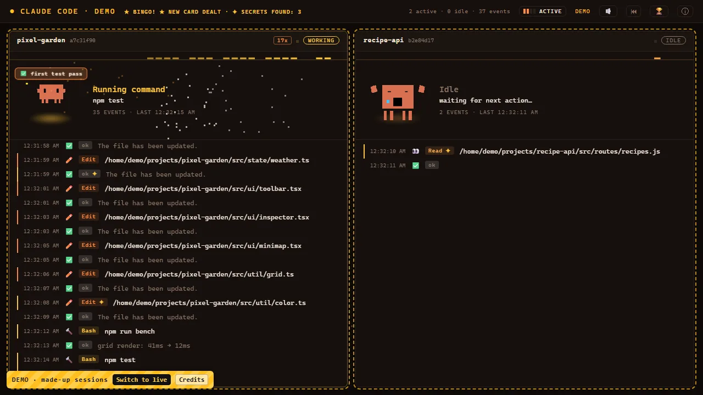
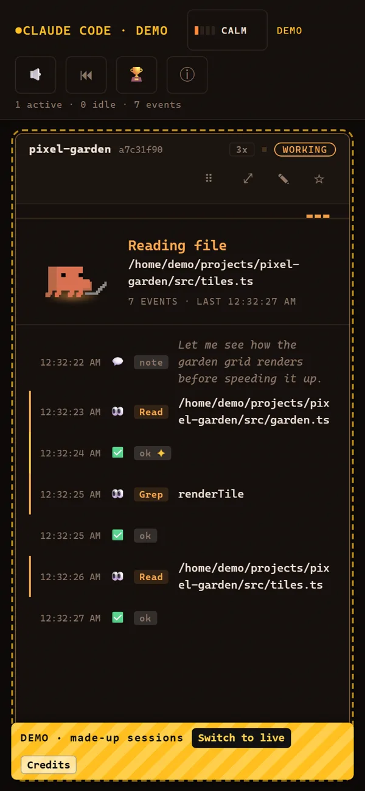

Live activity
See file reads, edits, commands, waiting, and other activity as it happens.
A LIVE DASHBOARD FOR CLAUDE CODE
See what Claude is doing right now — files, commands, edits, waiting, and everything in between.
Free · Open source · Runs locally
Reading file
src/garden.ts
LIVE DEMO
This is the real dashboard running a simulated session. Click around, watch Clawd react, and see what a live session feels like.
Try ⏮ Replay or the 🏆 stats, or click Clawd. Nothing here touches a real Claude Code session.
WHAT IT SHOWS
CC Watcher turns the quiet parts of a Claude Code session into something you can actually see.
See file reads, edits, commands, waiting, and other activity as it happens.
Clawd changes with the session — working, idle, done, errors, streaks, combos, and sleepy moments.
Come back to previous sessions and replay what happened.
Track sessions, streaks, milestones, and the little moments worth remembering.
Explore the experience without connecting Claude Code.
DEMO · made-up sessionsOpen itUse it on your phone, or install CC Live on Windows: minimize the dashboard and Clawd stays on your desktop.
BROWSER · PHONE · DESKTOP
Keep a dashboard open while Claude works, install CC Watcher on your phone, or use CC Live on Windows, where Clawd steps out onto your desktop whenever you minimize or close the dashboard.


One record everywhere: your computer and phone share the same totals, streaks and badges. Double-click Clawd on the desktop to open the full dashboard.
THE TOUR · 1:29
Streaks, combos, errors, comebacks, easter eggs and a nap — the whole show, with sound.
PRIVACY
CC Watcher reads Claude Code's local log files. It doesn't upload them, track you, or send your session data anywhere.
The only file it writes is progress.json (your totals and badges), next to server.js. This page has no trackers either.
INSTALL
Get the zip from the latest GitHub release and unzip it anywhere. A normal folder like Documents is safest.
Latest releaseWindows: double-click start.bat. Mac / Linux: open a terminal in the folder and run:
sh start.shThe first time, it installs Node.js if it's missing, plus two small libraries.
Your browser opens the dashboard. Keep the black window open, then use Claude Code as normal.
http://localhost:4790CC Live for Windows: CC.Live.Setup.1.0.0.exe is on the same release page. It's the dashboard as a desktop app: minimize or close it and Clawd keeps watching from your desktop. It isn't code-signed, so SmartScreen asks once: More info → Run anyway.
Full setup guide phone, desktop, troubleshooting.
CREDITS & LICENCE
The same text is in the app under ⓘ Credits.